Clinical Information
Applications, validation, and multimodal monitoring solutions for neurocritical care
Clinical Topics
Explore the science, application, and technology behind cerebral perfusion monitoring
Why Perfusion?
Perfusion is an essential parameter in critical care management that reveals what's happening at the tissue level.
ExploreApplications & Benefits
How our technology is currently applied across neurocritical care and the associated clinical benefits.
ExploreValidation
Clinical validation and regulatory documentation for the Bowman Perfusion Monitoring System.
ExploreTheory of Operation
How the Bowman Perfusion Monitor® achieves accurate, continuous perfusion measurement.
ExploreHow to Use the Monitor
Step-by-step resources and video guides demonstrating the setup and operation of the BPM system.
ExploreMultimodal Monitoring
Our products integrate seamlessly with other multimodal monitoring parameters for complete brain physiology insight.
ExploreLiterature
Peer-reviewed publications reporting the application of our technology in clinical practice and research.
View PublicationsWhy Perfusion?
Tissue perfusion — the delivery of oxygenated blood to the capillary beds — is the fundamental process that keeps brain cells alive. Unlike blood pressure or heart rate, which reflect systemic hemodynamics, perfusion reveals what is actually happening at the cellular level where oxygen exchange occurs.
In neurological injuries such as traumatic brain injury (TBI) and subarachnoid hemorrhage (SAH), global hemodynamic parameters can appear normal on standard monitors while regional cerebral ischemia develops silently. By the time conventional signs of compromise appear, irreversible neuronal damage may already be underway.
Insufficient perfusion (ischemia) — when demand exceeds supply — induces an oxygen debt and causes a buildup of toxic cellular waste, stressing the vitality of the tissue. Untreated ischemia leads to cellular dysfunction, loss of organ function, and even cellular death, i.e., tissue infarction.
Excessive perfusion (hyperemia) — when supply exceeds demand — is frequently associated with formation of edema in the associated tissue.
Consequently, maintaining adequate perfusion (via managing perfusion pressure and vascular patency) is vital to maintaining healthy tissue.
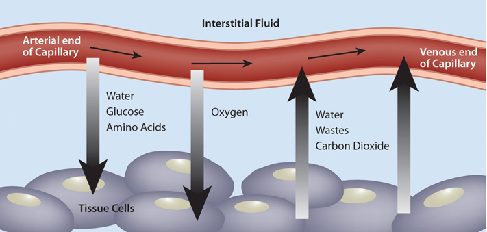
Image courtesy of: Essentials of Nutrition: A Functional Approach. Vol. 1. December 2012.
The clinical gap: Standard monitoring (ICP, MAP, CPP) tells you the pressure environment. Only direct cerebral blood flow measurement tells you whether tissue is actually being perfused — a critical missing piece of the physiological picture.
Hemedex's patented Thermal Diffusion Flowmetry (TDF) technology directly and continuously quantifies regional CBF in absolute physiological units (ml/100g/min), giving clinicians an objective, real-time perfusion signal at the bedside with FDA approval, for up to ten days.
Perfusion Monitoring Reveals:
- Regional cerebral ischemia before clinical signs appear
- Autoregulation when paired with CPP
- Vasospasm following SAH
- Response to vasopressor therapy and hyperventilation
- Secondary injury development during ICU stay
- Brain edema via thermal conductivity changes
- Regional CBF heterogeneity in contrast to global metrics
- Microcirculatory failure despite normal CPP
- Early vasospasm before neurological deterioration
- Penumbral tissue at risk of infarction
- Real-time response to therapeutic interventions
- Tissue-level CBF effects of ICP management
- Differentiate between vasospasm and hyperemia subsuquent to increased TCD Velocity
- Observation of sub-clinical CSD from CBF patterns
Applications & Benefits
The Bowman Perfusion Monitor is used across a range of critical clinical scenarios where understanding real-time cerebral blood flow is essential for guiding therapy and preventing secondary injury.
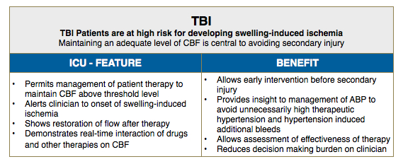
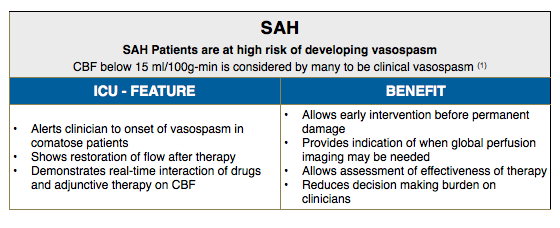
Traumatic Brain Injury (TBI)
- Continuous bedside CBF monitoring during the critical 72-hour post-injury window
- Detection of secondary ischemic events driven by ICP crises, cerebral vasospasm, or hypotension
- Real-time feedback for CPP optimization and vasopressor titration
- Assessment of autoregulation status to personalize CPP targets
Subarachnoid Hemorrhage (SAH)
- Early detection of delayed cerebral ischemia (DCI) and vasospasm before neurological deficits appear
- Guidance for hypervolemia and vasopressor therapy during vasospasm treatment
- Monitoring response to intra-arterial papaverine and angioplasty
- Assessment of ischemic penumbra in patients with poor neurological grade
Intraoperative Monitoring
- Cerebral aneurysm clipping — confirmation of adequate perfusion after clip placement
- Spine surgery with risk of cord ischemia
- Cardiopulmonary bypass — cerebral perfusion adequacy during circulatory arrest
- Carotid endarterectomy — real-time CBF during cross-clamp
Clinical Benefits
- Early warning of impending ischemia — opportunity to intervene before injury occurs
- Personalized therapy targeting — move beyond population-average CPP goals
- Objective response assessment for every intervention
- Continuous real-time signal – Absolute units (ml/100g/min)
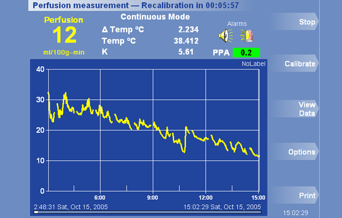
Vasospasm detection — real-time CBF monitoring screen

Autoregulation Detection - Integrated multimodal monitoring
Other Applications
The system has also proved useful in a variety of other applications, including organ transplantation, reconstructive surgery, and oncology. Because adequate perfusion is essential to all tissues, there are many conditions for which monitoring blood perfusion could improve treatment, cost, and ultimately patient outcome.
- Organ Transplantation — Continuous monitoring of hepatic microcirculation during and after liver transplantation to assess graft viability
- Reconstructive Surgery — Perfusion monitoring in free tissue flaps and microvascular transplantation to detect early vascular compromise
- Oncology — Assessment of perfusion changes during tumor hyperthermia treatment
For a comprehensive list of publications in these areas, see the Transplantation / Surgery and Methodology categories in our publications library.
Validation & Regulatory Status
The Bowman Perfusion Monitor has been rigorously validated against established standard techniques for cerebral blood flow measurement and has received regulatory clearance in major global markets.
US Market
FDA 510(k) clearance for the Bowman Perfusion Monitor, QFlow 500™ Perfusion Probe, and all Titanium Bolt Kits.
Quality System
QA surveillance audits conducted by FDA, EU, and ISO notified bodies with no findings.
The flow measured by the perfusion probe has been validated for accuracy against flow measured by XeCT in humans, hydrogen clearance in pigs, and radioactive and non-radioactive micro-spheres in rat and rabbit livers. All probes are calibrated during the process of manufacture for zero flow condition of less than 0.2 ml/100g-min.
Key Validation References
P. Vajkoczy, H. Roth, P. Horn, T. Lucke, C. Thome, U. Hubner, G.T. Martin, C. Zappletal, E. Klar, L. Schilling, and P. Schmiedek, "Continuous monitoring of regional cerebral blood flow: experimental and clinical validation of a novel thermal diffusion microprobe," J. Neurosurg., vol. 93, no. 2, pp. 265–274, Aug. 2000.
E. Klar, T. Kraus, J. Bleyl, W.H. Newman, H.F. Bowman, W. Hofmann, R. von Kummer, M. Bredt, C. Herfarth, "Thermodiffusion for continuous quantification of hepatic microcirculation — Validation and Potentials in Liver Transplantation," Microvasc. Res., 58: 156-166, 1999.
G.T. Martin and H.F. Bowman, "Validation of Real-Time Continuous Perfusion Measurement," Medical & Biological Engineering & Computing, 38(3): 319-326, 2000.
For a full list of literature, see our Publications page. For specific documentation requests, contact our clinical team.
Theory of Operation
The Bowman Perfusion Monitor® uses Thermal Diffusion Flowmetry (TDF), a technique originally conceived at MIT that quantifies tissue perfusion by measuring the thermal properties of brain tissue in real time.

QFlow 500™ dual-thermistor probe design
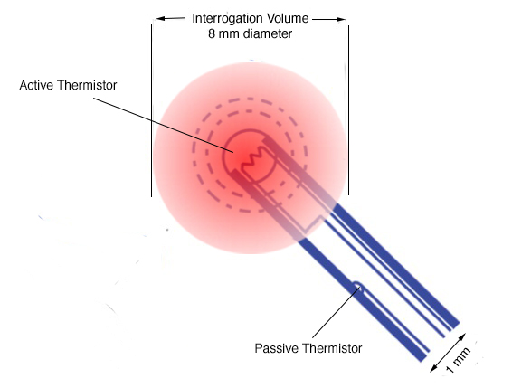
Thermal diffusion measurement principle
The BPM technology measures perfusion by tracking changes in power required to heat a small volume of tissue to a fixed temperature as blood moves past the heated tip. When the probe is powered on, a thermal field grows around the heated tip, until it is fully developed. The fully developed thermal field defines the interrogation volume over which perfusion is quantified. It takes approximately four minutes for the thermal field to fully develop following power-up and enable an accurate measurement of perfusion.
How It Works — Step by Step
TDF-CBF Measurement Principle
- Step 1 — Probe placement: The QFlow 500™ probe is inserted into brain parenchyma through a titanium bolt, positioning two thermistors within the tissue of interest (typically frontal white matter).
- Step 2 — Controlled heating: The distal thermistor is heated to a fixed temperature approximately 2°C above brain baseline temperature and the power required to maintain that fixed temperature is measured continuously.
- Step 3 — Thermal diffusion: Blood flowing through capillaries in the heated volume carries heat away from the thermistor at a rate proportional to the local blood flow.
- Step 4 — Gradient measurement: The temperature difference between the heated and unheated reference thermistors is continuously measured by the Bowman Perfusion Monitor in the perfusion calculation.
- Step 5 — Perfusion calculation: The monitor combines the probe & tissue thermal properties with the continuous temperature difference and power measurements in the perfusion extraction algorithm derived from the probe–tissue coupled thermal diffusion equations to calculate regional CBF in absolute units.
- Step 6 — Continuous output: Updated CBF values are continuously displayed and stored for clinical review.
Normal resting CBF in white matter is approximately 20–35 ml/100g/min. Ischemic thresholds begin below approximately 15–18 ml/100g/min, with severe ischemia below 10 ml/100g/min. The Bowman Perfusion Monitor expresses all measurements in these clinically meaningful absolute units.
How to Use the Monitor
The Bowman Perfusion Monitor is designed for use in the Neuro ICU and OR by trained clinical staff. The following resources provide an overview of the setup and operation process. For hands-on training, contact our clinical support team.
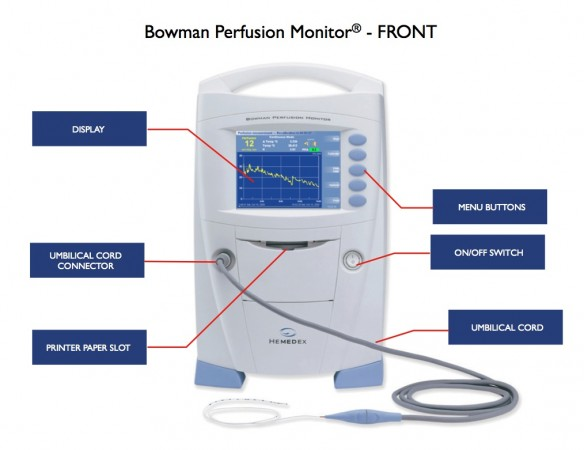
Front panel display
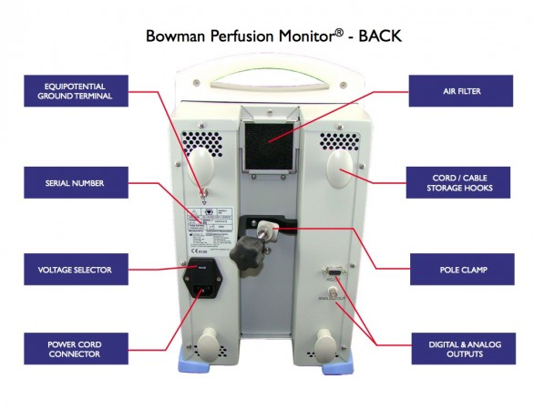
Rear panel connections
5 Steps to Setting Up the Monitor
- Step 1: Mount monitor on pole or place on shelf
- Step 2: Connect the power cord
- Step 3: Connect the umbilical cord
- Step 4: Insert the QFlow 500™ probe through the titanium bolt following the IFU
- Step 5: Connect the probe to the umbilical cord following placement
Monitor Display Elements
- Status Bar: Current operational phase, time remaining until next phase, and status alerts
- Perfusion Value: Large numerical display of perfusion in absolute units, updated second-by-second
- Trend Graph: Patient perfusion plotted over time in absolute units of ml/100g-min
- Temperature: Tissue temperature updated second-by-second
- ΔTemp: Temperature difference between the 2 sensors (stabilization) or probe temperature above tissue (measurement)
- PPA: Probe Placement Assistant — reflects the quality of the signal and presence of cardiac-induced pulsatility
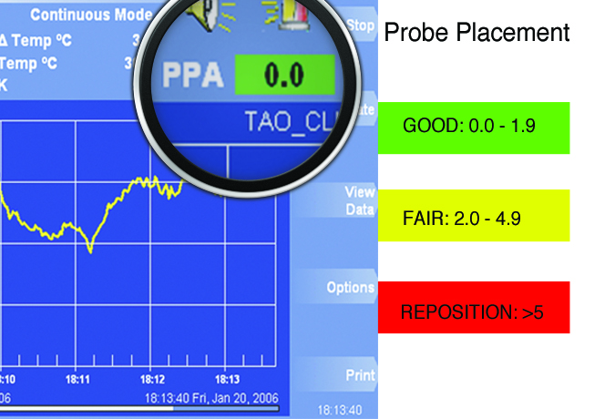
PPA value ranges indicating probe signal quality
Phases of the Measurement Cycle
The Bowman Perfusion Monitor automatically cycles through these phases of measurement:
- Temperature Stabilization Phase: Tissue temperature stability criteria is assessed. When met, the BPM advances to Calibration automatically.
- Calibration Phase: A 10-second period where K (thermal conductivity) and PPA values are calculated.
- Blackout (first 2 minutes): The thermal field is at the early stages of development — no data is presented.
- Grayout (next 2 minutes): The thermal field is more developed — the BPM presents a blinking perfusion value.
- Active Measurement: When the perfusion value stops blinking, the thermal field is sufficiently developed and data plots on the screen. The BPM monitors perfusion for the selected period (default 30 minutes).
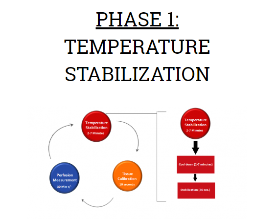
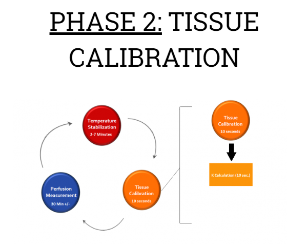
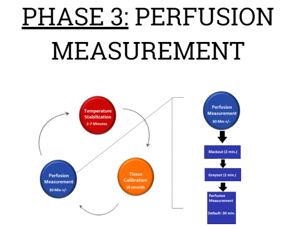
Training & Support
- Clinical training available from our Clinical Applications Specialist
team - Hemedex provides in-service training for nursing and physician staff prior to first use
- Emergency technical support available 24/7 at +1 617 577 1759
- Instructions for Use (IFU) and quick-reference cards provided with all products
- Contact our team for access to full training materials
Multimodal Monitoring
No single parameter tells the complete story of brain physiology in the critically ill patient. Multimodal Monitoring (MMM) integrates multiple physiological signals simultaneously, enabling clinicians to build a comprehensive, real-time picture of the injured brain and make more informed, individualized treatment decisions.
The Hemedex QFlow 500™ Perfusion Probe is the only tool that adds absolute CBF to the MMM panel — completing the pressure-oxygenation-flow triad that forms the foundation of precision neurocritical care.
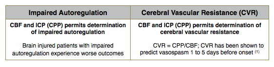
Multimodal Monitoring Data
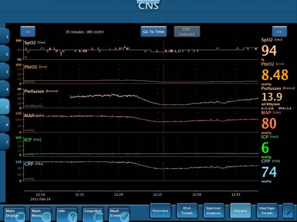
Image courtesy of Dr. Howard Yonas, University of New Mexico Hospital — Simultaneous display of multiple cerebral parameters for clinical interpretation
Parameters in a Complete MMM Panel
Cerebral Blood Flow (CBF)
Provided by the QFlow 500™ via Thermal Diffusion Flowmetry. The only continuous, absolute CBF parameter available at the bedside.
Intracranial Pressure (ICP)
Measured via intraparenchymal or intraventricular catheter. Drives CPP calculations together with MAP.
Brain Tissue Oxygen (PbtO₂)
Clark electrode-based measurement of regional brain tissue oxygen tension. Ischemia threshold typically <15 mmHg.
Brain Temperature
Direct parenchymal temperature monitoring, often integrated with ICP or oxygen sensors.
Electrocorticography (ECoG)
Detection of cortical spreading depolarizations and seizure activity at the cortical surface.
Cerebral Microdialysis
Biochemical monitoring of the metabolic state of the penumbra — glucose, lactate, pyruvate, glutamate.
The Power of Knowledge: Transforming Data into Information
Multimodal Monitoring is the simultaneous monitoring of multiple physiological parameters to provide context for their interpretation, enhance detection of critical situations, monitor responses to therapeutic interventions, and facilitate clinical decision making.
What Multimodal Parameters Reveal Together
- Simultaneous interpretation of cerebral perfusion pressure and flow enables detection of impaired autoregulation — a risk factor for poor outcomes
- Simultaneous interpretation of cerebral perfusion pressure and flow enables estimation of cerebral vascular resistance (CVR) — a predictor of vasospasm
- Simultaneous interpretation of arterial pressure and cerebral blood flow provides insight into the efficacy of hemodynamic therapeutic management
- The combination of parameters provides new alarm conditions — e.g., the simultaneous combination of moderately low flow and moderately high blood pressure indicates an untoward state, although either condition alone would not be cause for concern
Clinical Value of Combined Data
- The display of multiple parameters in one place facilitates their clinical interpretation
- The combination of parameters provides new features that facilitate clinical management (e.g., cerebral vascular resistance)
- Enables patient-specific therapy rather than protocol-based management
- Provides real-time neuromonitoring data for a precision-medicine approach to clinical management of severe acute neurological injuries
Single Burr Hole Access
- The Universal Quad Lumen Bolt is specifically designed to secure all commonly utilized intraparenchymal sensors
- A single Burr Hole allows for close proximal monitoring of all physiologic and chemical markers, and potentially decreases risk of hemorrhage and infection
- The four lumens splay out to prevent sensor interference, while remaining close enough to relate physiology between sensors
- Learn more about the Quad Lumen Bolt →
Explore the published evidence behind cerebral perfusion monitoring
View All PublicationsMultimodal Monitoring Enables Patient-Specific Care
Add absolute cerebral blood flow to your institution's monitoring panel.
Contact Our Clinical Team